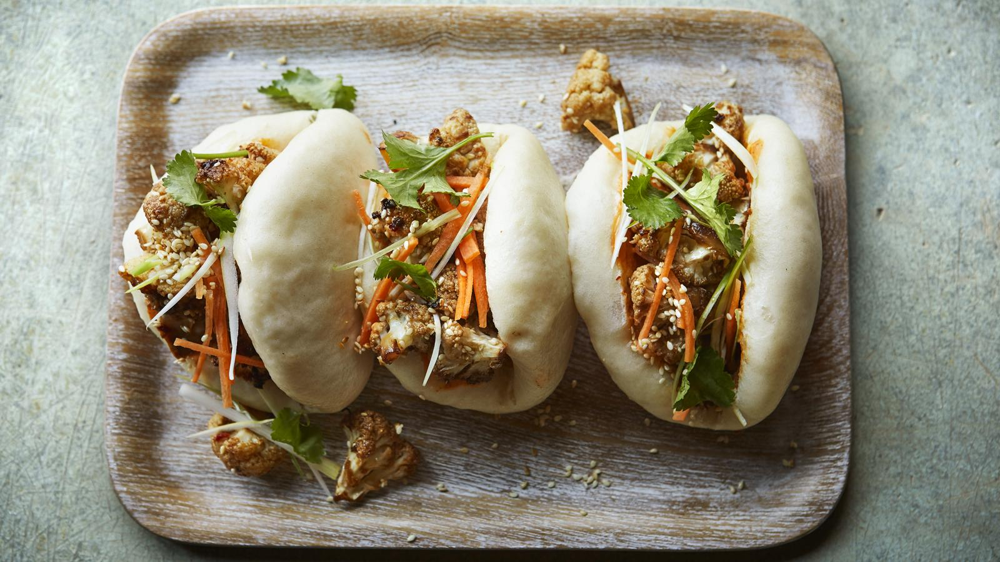

Vegan bao with spicy cauliflower

These vegan Chinese fluffy steamed buns are paired with a sweet, spicy sticky filling. You’ll have time to get on with other things while the dough rises and the cauliflower bakes in the oven.
Each serving provides 690 kcal, 18g protein, 112g carbohydrate (of which 15g sugars), 17g fat (of which 2.5g saturates), 10g fibre and 3.3g salt.
For this recipe you will need a steamer, ideally bamboo. You can buy these from Asian supermarkets or online.
Ingredients
For the bao buns
- 480g/1lb 1oz plain flour, plus extra for dusting
- 20g/¾oz caster sugar
- ½ tsp salt
- 1 sachet fast action dried yeast (about 7g or 1½ tsp)
- 1 tsp baking powder
- 100ml/3½fl oz oat milk, lukewarm
- 2 tsp sesame oil
For the cauliflower filling
-
1 small cauliflower, cut into bite-sized florets
- 2.5cm/1in fresh root ginger, peeled and finely grated
- 4 garlic cloves, finely chopped
- 1 red chilli, finely chopped
- 3 tbsp tamari
- 1 tsp brown sugar
- ½ tsp salt
To serve
- 10 tsp vegan sriracha mayonnaise
- 1 carrot, julienned or ribboned with a peeler
- 1 spring onion, trimmed and cut into thin strips
- 5 tsp sesame seeds
- few sprigs coriander (optional)
Method
- To make the buns, put all the dry ingredients in a large bowl and mix well. Add 125ml/4fl oz lukewarm water and the oat milk. Mix with your hands and bring together to form a dough, then knead on a lightly floured surface for 8–10 minutes, until smooth and springy. Clean and lightly oil the bowl. Pop the dough back in the bowl, cover with a tea towel and leave in a warm place for 1 hour, or until doubled in size (if it's cold this may take up to 2 hours).
- Tip the dough onto a lightly floured surface and knead briefly to knock it back. Roll the dough into a fat sausage shape (approx. 30cm/12in long). Slice the roll into eight to ten equal portions and shape each piece into a rough ball. Lightly flour a rolling pin and roll each ball into an oval shape. Lightly rub a tiny drop of sesame oil over the surface (to prevent the dough from sticking together) and fold in half. Repeat until all the balls are folded, then place them on a flat surface, cover with a tea towel and leave to prove for 30 minutes.
- Preheat the oven to 200C/180C Fan/Gas 6.
- To make the cauliflower, mix all the ingredients together in a large bowl, adding 1 tablespoon of water to loosen the mixture, and marinate for 10 minutes. Tip onto a baking tray and bake for 35–40 minutes, or until crispy.
- Meanwhile, line a bamboo steamer with baking paper, then place three or four buns inside each steam basket. Steam for 6–7 minutes, until fluffy but firm and dry to the touch. Repeat until all the buns are steamed.
- Fill each bun with a teaspoon of sriracha mayonnaise and crispy cauliflower topped with shredded carrot, spring onion and ½ teaspoon of sesame seeds. Scatter with coriander, if using.
Recipe credit: Lucy Parker, BBC Good Food
Return to Mains Page